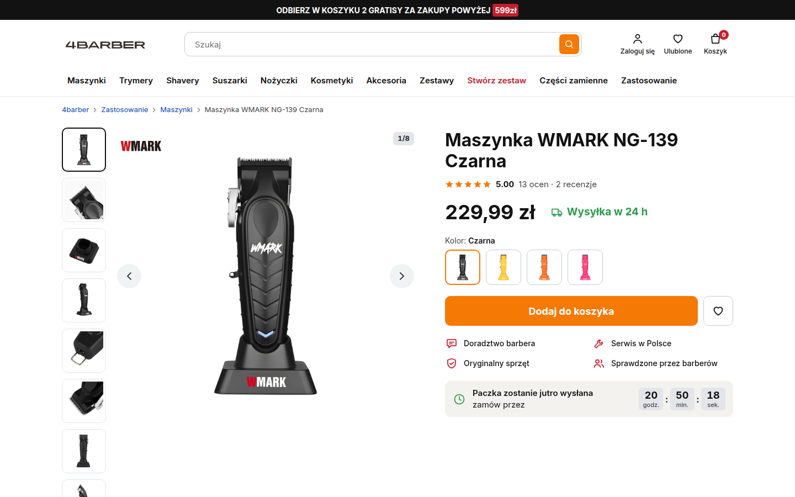
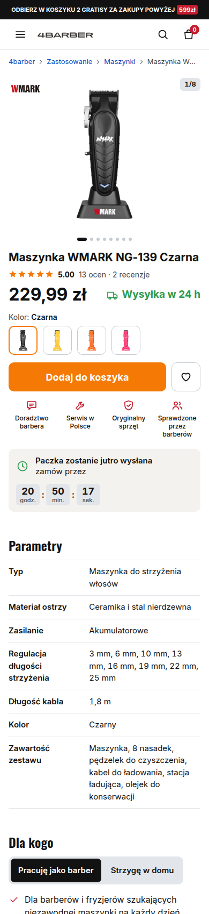
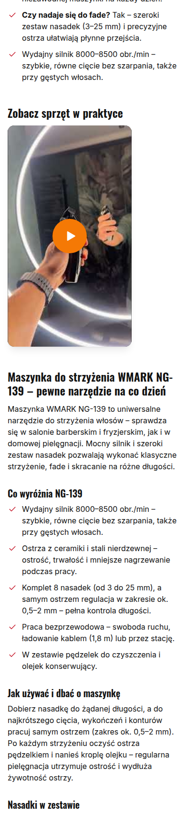
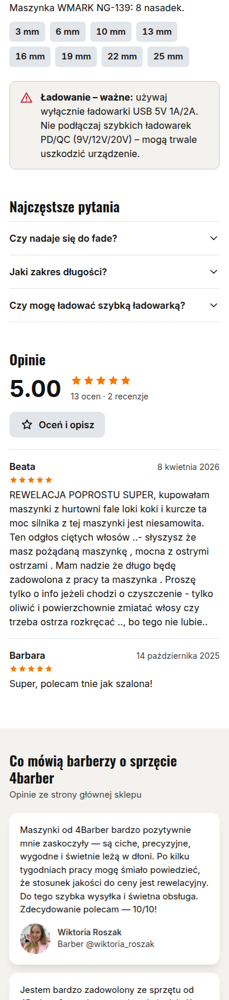
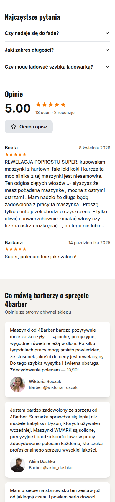
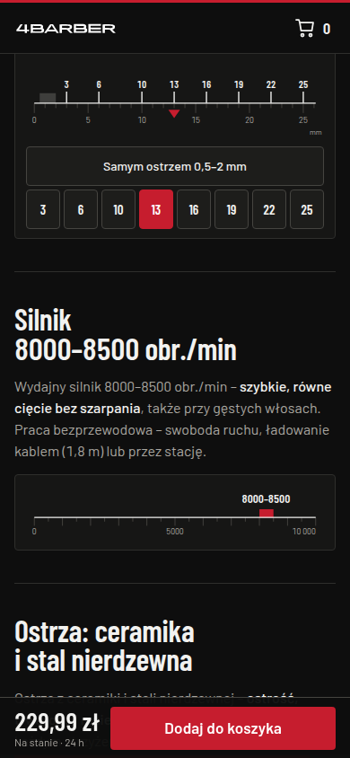

Przegląd żywego 4barber.pl (telefon 390×844 i desktop 1440) oraz propozycje nowej karty na przykładzie bestsellera Maszynka WMARK NG-139 Czarna. Wszystkie liczby ze sklepu z datą odczytu.
Strony na żywo: https://szczepkowski-cpu.github.io/4barber-rozwoj/ · źródło faktów: dane/ng139-2026-09-27.md · żywy sklep oglądany read-only
Propozycje: v1 „Porządek” (biała), v4 „Porządek” z technikaliami w szpalcie (biała), v3 „Karta techniczna” (czarna, rekomendacja). v2 wycofana z galerii (decyzja: jedna czarna).
Jak jest dziś (27.09.2026, ok. 20:45)
1 881 pxod góry karty do „Dodaj do koszyka” w treści na telefonie; nazwa od 811 px, cena ≈1 280 px
bez cenyprzyklejony przycisk na telefonie jest, ale bez ceny i nazwy
6 300 pxdługość karty produktu na telefonie; strona główna 8 360 px
Strona główna, telefon: popup zniżki na modalu cookies, hero niewidoczne.Karta NG-139, telefon, pierwszy ekran: zdjęcie, licznik i przyklejony przycisk bez ceny. Bez nazwy i ceny.Po dodaniu do koszyka: pasek darmowej dostawy, „Skompletuj zestaw”. Najlepszy ekran sklepu.
Karta NG-139, desktop 1440×900: cena widoczna, „Dodaj do koszyka” pod krawędzią ekranu.Koszyk, desktop: checkout jednostronicowy, InPost 9,99 zł, „Zamawiam i płacę” od razu widoczne.
Diagnoza: co zostaje, co blokuje sprzedaż
Zostaje
Treść karty: parametry, „Co wyróżnia”, „Dla kogo”, FAQ, ostrzeżenie o ładowarce, wideo. To fakty, nie marketing.
Ocena 5.00 z 13 ocen, licznik „paczka jutro”, „Wysyłka w 24 h”, cztery ikony zaufania (Doradztwo barbera, Serwis w Polsce, Oryginalny sprzęt, Sprawdzone przez barberów).
Pasek USP na stronie głównej: oficjalny dystrybutor WMARK, serwis door2door, dostawa 24 h i darmowa od 250 zł.
Modal „Dodano do koszyka” i checkout jednostronicowy z InPost, BLIK, Apple/Google Pay, ratami i PayPo.
Opinie barberów z nazwiskiem i Instagramem (dziś tylko na stronie głównej).
Blokuje sprzedaż
Nazwa (811 px) i cena (≈1 280 px) poza pierwszym ekranem telefonu; przyklejony przycisk bez ceny, właściwy w treści na 1 881 px. Na desktopie przycisk pod ekranem (1 039 px).
Kolejność odwrotna do decyzji: 7 wierszy parametrów przed ceną; czerwony „Przejdź do pełnego opisu” konkuruje z pomarańczowym „Dodaj”.
Warianty kolorów jako 4 wielkie kafle (~700 px) między ceną a przyciskiem.
Trzy liczby, które sprzedają maszynkę (8000–8500 obr./min, 8 nasadek 3–25 mm, ceramika), ukryte w opisie pod wideo.
Trzy warstwy przy wejściu; na stronie głównej ~1 000 px tekstu o sklepie przed pierwszą kategorią.
Wideo bez miniatury (czarny prostokąt do czasu załadowania YouTube). W koszyku brak paska darmowej dostawy, za to 5 szarych kafli gratisów od 599 zł.
Wniosek: treść karty jest dobra. Problem to kolejność i odległość do przycisku. Dlatego propozycje zaczynają od karty produktu.
v1biała · ostrożna ewolucja „Porządek”: ten sam sklep, nowa kolejność
Wygląd obecnego 4barber.pl 1:1 (Inter, biel, pomarańczowy przycisk, czerwone akcenty). Zmienia się tylko kolejność: nazwa, ocena, cena, „Wysyłka w 24 h”, kolory jako małe próbki i „Dodaj do koszyka” mieszczą się w pierwszym ekranie telefonu. Po przewinięciu przycisk zostaje w przyklejonym pasku. Parametry jako tabela pod spodem, opinie barberów na karcie, wideo z miniaturą.
Telefon 390×844, pierwszy ekran. Przycisk kończy się na 728 px.

Desktop 1440×900: galeria po lewej, przyklejony panel zakupu po prawej.
Na żywo: https://szczepkowski-cpu.github.io/4barber-rozwoj/pdp-v1.html
v1 · cała strona na telefonie



v4biała · technikalia w szpalcie „Porządek” z parametrami pod oceną, jak dziś
To v1 z jedną różnicą na życzenie Szymona: lista parametrów z ptaszkami wraca do prawej szpalty pod oceną, tak jak na obecnym sklepie. Na desktopie klient widzi technikalia obok zdjęcia, zanim zobaczy cenę. Na telefonie lista schodzi pod ikony zaufania, żeby cena i „Dodaj do koszyka” zostały w pierwszym ekranie. Osobna tabela parametrów niżej znika (byłaby dublem).
Telefon 390×844, pierwszy ekran: bez zmian względem v1.Desktop 1440×900: technikalia w prawej szpalcie między oceną a ceną.
Na żywo: https://szczepkowski-cpu.github.io/4barber-rozwoj/pdp-v4.html
v4 · cała strona na telefonie

v3czarna · rekomendacja „Karta techniczna”: maszyna w liczbach
Karta produktu jako arkusz techniczny maszyny. Numer modelu w skali arkusza, wycinanka produktu, cztery zmierzone liczby (8000–8500 obr./min, 0,5–2 mm samym ostrzem, 8 nasadek 3–25 mm, wysyłka 24 h). Pod spodem linijka nasadek do dotknięcia, skala obrotów, ostrza, lista części, ostrzeżenie o ładowaniu, wideo, barberzy z nazwiskiem, opinie, FAQ, „Skompletuj stanowisko”. Cena i „Dodaj do koszyka” w pasku przyklejonym do dołu od pierwszej sekundy. Krój Barlow Condensed to ten sam, którego sklep używa dziś w hero, czerwień 4barber jako jedyny akcent.
Telefon 390×844, pierwszy ekran: cztery liczby widoczne, pasek cena + przycisk na dole.Desktop 1440×900: arkusz w dwu kolumnach, przyklejony panel zakupu po prawej.
Na żywo: https://szczepkowski-cpu.github.io/4barber-rozwoj/pdp-v3.html
v3 · cała strona na telefonie i linijka nasadek

Linijka nasadek: dotknięcie stopnia (3…25 mm albo „samym ostrzem 0,5–2 mm”) przesuwa wskaźnik.
Porównanie i rekomendacja
v1 „Porządek”
v4 „Porządek” + technikalia
v3 „Karta techniczna”
Wygląd
obecny sklep 1:1
obecny sklep 1:1
czarny arkusz, Barlow Condensed, czerwień 4barber
Cena + CTA w 1. ekranie telefonu
tak, razem z ceną (CTA do 728 px)
tak (jak v1)
tak (pasek cena + przycisk na dole)
Technikalia
tabela pod pierwszym ekranem
lista z ptaszkami w prawej szpalcie (desktop), pod ikonami zaufania (telefon)
4 liczby w pasie + rysowane skale i lista części
Dowód barberów
3 cytaty ze zdjęciem
3 cytaty ze zdjęciem
4 cytaty ze zdjęciem
Ryzyko
najmniejsze; najmniej odróżnia
jak v1; dłuższa kolumna na desktopie
największa zmiana; wymaga przeniesienia na szablon Shoper
Detektor Impeccable
4 uwagi (cechy obecnego sklepu)
jak v1
0 uwag
Rekomendacja: v3 jako kierunek, v1/v4 jako bezpieczny krok pomiarowy
v3 jako jedyna zmienia to, czym karta przekonuje: liczbami i rysunkiem zamiast przymiotników. Pasuje do tonu sklepu „bez wciskania” i odróżnia 4barber od marketplace’ów, gdzie ten sam WMARK leży obok.
v1 albo v4 to minimalny ruch, jeśli najpierw chcemy zmierzyć samą kolejność i przyklejony przycisk (A/B na obecnym szablonie).
Po wyborze: stany „brak na stanie” i „po dodaniu do koszyka”, potem strona główna (warstwy przy wejściu), kategoria (filtry), koszyk (pasek darmowej dostawy zamiast kafli gratisów).